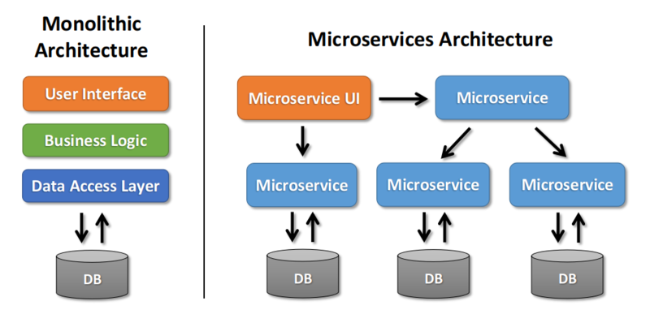

The most succinct way to rationalize our chosen high-level design architecture is to examine them from within the context of our functional and non-functional requirements. The following section will seek to outline our high level design choices, the requirements that necessitated these choices, and how the choices fulfilled the requirements.
From the highest level, our task was to create a recipe-hosting web application that was tailored to a host of design and software quality metrics. Zooming in, we have a client-server architecture that uses cloud computing and microservices to handle computational heavy lifting. This event-driven architecture is supported by a host of cloud services to support the Backend. This is the framework which we will dissect to conduct our design rationale. This rationale will be divided into Client and Backend sections to assist with identifying division of responsibility.
Our choice of client device and software version requirements was necessary to target a broad audience of devices and make sure the devices have relevant security patches. According to GlobalStats Statcounter mobile device market share tracker, as of September 2020, Android comprises 74.43% of the mobile operating system market while iOS holds 24.99% of the market. The remaining 0.58% of the market is captured by operating systems like Nokia, Windows, and Samsung [1]. Thus by creating mobile applications targeting iOS and Android will capture 99.42% of the mobile market.
Using data from Statista, we found that the targeted version of Android version 22 (Lollipop 5.1) in 2020 will ensure our application is available to 92.3% of Android users worldwide [2]. Our iOS application will target iOS version 13+, which will give us access to 91.29% of iOS users [3]. This will enable our application to be accessed by a total of 91.51% of the mobile device market. The web application will be accessible by users of Chrome, Edge, Safari, Firefox, and Opera. Pulling September 2020 browser market share data from Statcounter, we see that this will give us accessibility to 93.30% of users [4]. This high degree of accessibility ensures our software will be available to many users, fulfilling FR-8 and FR-13, while retaining focus on security as dictated in NFR-1. This focus on our client platform and use of the platform Software Development Kits will put us on the path to fulfill NFR-7, as an accessible platform allows non-technical users to join without excess effort required.
The client applications function will allow the connections between the client and backend to be discretized into three primary functions: Content Discovery, Grocery Tracking and the Chef-It! Control Plane (CCP). This separation will make it easier for future client-to-backend services to be integrated into the platform. The functionality of the Content Discovery, Grocery Tracking, and CCP functions is described in the section that follows.
The Content Discovery function assists the Backend in delivering user information, recipes, ingredients, and videos to the UI. The user communicates with the Backend via the UI. Login information is handled using OAuth. This accomplishes both FR-1 and NFR-7, allowing users who do not want to create a dedicated account to use Facebook or other platform’s login to access content. Requests are made through standard interfaces like REST or JSON. When a request is passed via the Content Discovery function to the Backend, it is passed to a Load Balancer to accomplish NFR-2, NFR-3, NFR-5, and NFR-6. These will be discussed further in the Backend section. Through the user interface, the users are able to gain access to this process and achieve requirements FR-3, FR-4, FR-6, FR-7, and FR-12. We found that using the Content Discovery function to bind the Client to the Backend gave us a pathway to accomplish a host of requirements in a scalable way.
When a request is passed via the Content Discovery function to the Backend, it is first passed to a Load Balancer to accomplish NFR-2, NFR-3, NFR-5, and NFR-6. The use of a Load Balancer assists in providing the application with scalability, reliability, and availability. The Load Balancer we have chosen is an Elastic Application Load Balancer offered by AWS. This balancer is well suited to handle HTTP and HTTPS traffic and is specifically targeted at handling microservices and containers.
The Chef-It! Control Plane is a proprietary sub-function of the Grocery Tracking function that delivers streaming data from the Backend to the UI. One functionality of the CCP is to deliver on-demand grocer locations to the user. When the user chooses to request nearby grocery stores, the Grocery Tracking module will pass the user’s location to the CCP. The CCP then will find nearby grocers, access their APIs and find deals or place grocery orders. The CCP does the bulk of the work of the Grocery Tracking function and accomplishes the requirements of handling internal associations for video recipes, allowing for in-app payment, locating grocers, and implementing the shopping cart for local grocery stores. Another functionality of the CCP is during streaming of video tutorials. In order to achieve the lowest latency, the CCP utilizes the GS functionality on the user’s device to determine the nearest CDN server. This module is what sets apart our product from all competitors. The ability for an app to stream video content, recipe content, then use that information to create a tailored grocery list has not yet been realized and represents an advantageous market opportunity. Our method of implementation that preserves the lightweight nature of the client and reserves computational resources for the Backend, creating an efficient and flexible architecture.
Amazon Web Services is at the core of our application’s Backend. Our decision to make our solution cloud-based stems from the reliable, secure, and scalable nature of the cloud. The services used in our architecture and their purpose are outlined in the sections that follow.
The persistence of database information will be attained using distributed databases such as Cassandra or AWS DynamoDB. The advantage of the use of such systems is manyfold. First, the option is secure which is one less task the developers must handle and fulfills NFR-1. Secondly, the scalability of these databases makes it easy to add more information without running into spatial concerns. This also supports NFR-3 and NFR-5, ensuring that there is low latency under heavy load and the application can handle a high number of simultaneous connections. Finally, the use of scaled databases presents a financial advantage as the cost to purchase and set up local storage that may be over or undersized is usually undermined by the pay-as-you-go model used by many distributed database companies. While this is not a strict requirement defined in Tables B-1,B-2,and B-3, this should always be considered.
When deciding on the design for our product, we considered a monolithic architecture and a microservices-based architecture. Figure M-1 below shows the general layout of each architecture.
Figure M-1. Monolithic Architecture vs. Microservices Architecture
We selected the microservices architecture, as it provides the following benefits surrounding system and software quality:
When a request has been passed from the AWS load balancer towards the application APIs, it must first be handled by the API Gateway Service built by our team called “Edge”. Edge serves to create a buffer between the client and Application API that generate RESTful APIs, perform dynamic routing, increase security, and enhance fault tolerance.
The Application API features a group of useful APIs that host the core business logic of the application. The APIs can handle functions like Signup, Recommendation, Ingredients, and more. The API converts the commands it receives from Edge into a format that can be handled by the respective microservices. Bundling the API services together makes the application extensible, should the need arise in the future. It also seeks to satisfy a list of functional and non-functional requirements.
The use of Amazon Elastic Compute Cloud, or EC2, is another necessity to allow our application to a large number of users while delivering a seamless experience. EC2 is able to deliver a scalable and highly available solution, able to handle a multitude of complex requests and any computing need we could require.
The Processing Pipeline component is an essential part of our application. It is tasked with handling our microservices interactions in near real-time. Our decision to incorporate this component into our design resulted from security, reliability, and speed requirements. The addition of the processing pipeline allows for data integrity checks, data polishing, and data integration that aids our microservices in storing, processing, and retrieving information from the data stores.